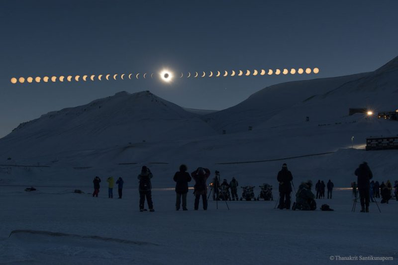

Solar Eclipses
Eclipses are some of the most spectacular events you may ever witness. Earths moon momentarily lines up just right to temporarily block out the massive star in our sky. If you ever get the opportunity, dont miss it!
Here is a quote from Space.com:
The fact that an eclipse can occur at all is a fluke of celestial mechanics and time. Since the moon formed about 4.5 billion years ago, it has been gradually moving away from Earth (by about 1.6 inches, or 4 centimeters per year). Right now the moon is at the perfect distance to appear in our sky exactly the same size as the sun, and therefore block it out.